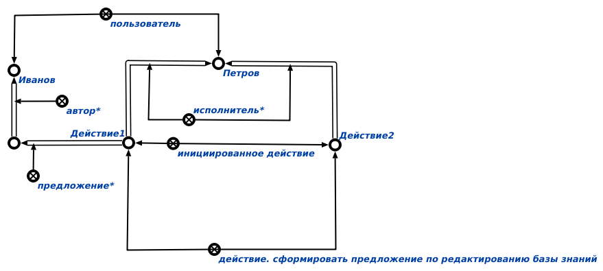

Команда поиска инициированных действий, относящихся к определённому классу действий предназначена для поиска инициированных действий, относящихся к определённому классу действий. Единственным аргументом команды является класс действий, для которого предполагается существование конкретных знаков инициированных действий. Результатом выполнения команды является вывод спецификаций всех инициированных знаков действий, относящихся к определённому классу действий. Пример выполнения команды показан ниже:
